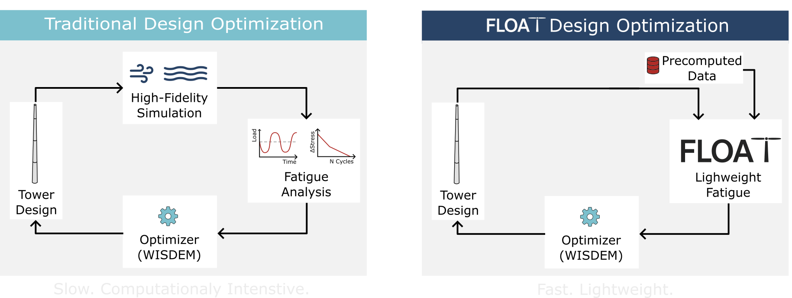
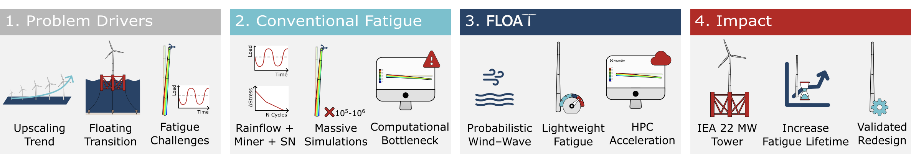
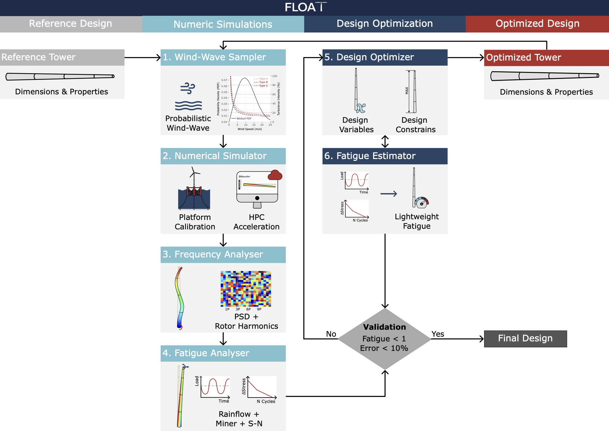

~33×
fatigue lifetime extension
(9 months → 25 years)
−8.6%
mean relative error
vs 6,468 OpenFAST sims
~98%
damage reduction at
the tower base
10⁻¹×
computational cost vs
traditional fatigue loops
FLOAT is a lightweight fatigue-aware tower design framework integrated into WISDEM. It enables fast estimation of cumulative tower fatigue damage by scaling precomputed high-fidelity fatigue results from a reference wind turbine tower to any new tower geometry under evaluation.
This allows fatigue-aware analysis and design optimization to be performed without rerunning expensive aero-hydro-servo-elastic simulations, reducing computational cost by several orders of magnitude while maintaining validated accuracy with low error.

FLOAT extends WISDEM's native TowerSE module with a new fatigue-aware model: it takes a precomputed high-fidelity damage distribution from a reference tower and scales it to any candidate geometry via analytical relationships in radius and wall thickness. Fatigue damage then becomes a regular WISDEM constraint that the optimizer can drive.

The pyfloat Python package, the TowerFatigueDamage OpenMDAO component inside wisdem/towerse/, eight examples (CLI tasks + end-to-end paper workflow), and bundled inputs for the IEA-22-280-RWT. pip install --no-deps -e . after the conda env.
The fatigue-redesigned IEA 22 MW semi-submersible tower as a ready-to-use OpenFAST 3.5.2 model + windIO ontology. Drop into your simulation pipeline directly.
Full methodology, scaling law derivation, validation against 6,468 wind–wave OpenFAST simulations, and the IEA-22-280-RWT redesign case study.
The FLOAT-redesigned tower is in the process of being adopted by the official IEA 22-MW offshore reference wind turbine. Track integration in PR #164.
@misc{ribeiro2026floatfatigueawaredesignoptimization,
title={FLOAT: Fatigue-Aware Design Optimization of Floating Offshore Wind Turbine Towers},
author={João Alves Ribeiro and Francisco Pimenta and Bruno Alves Ribeiro and Sérgio M. O. Tavares and Faez Ahmed},
year={2026},
eprint={2601.01657},
archivePrefix={arXiv},
primaryClass={cs.CE},
url={https://arxiv.org/abs/2601.01657},
}We thank Garrett Barter, Pietro Bortolotti, and Daniel Zalkind from the National Renewable Energy Laboratory (NREL) for their insightful discussions and technical guidance. This work builds on a fork of WISDEM.